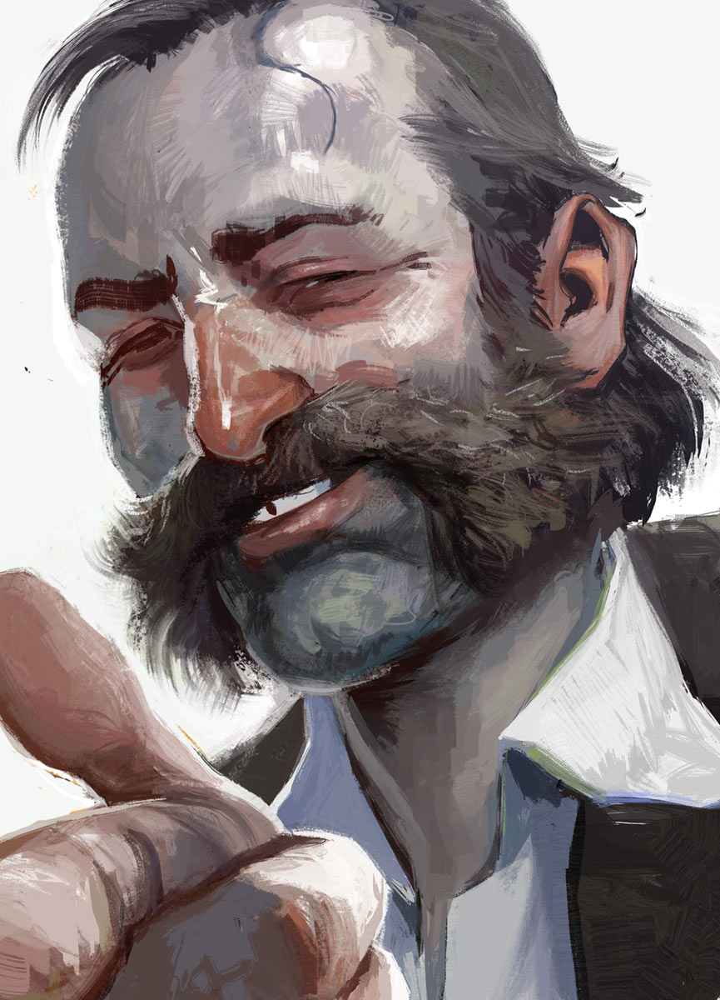
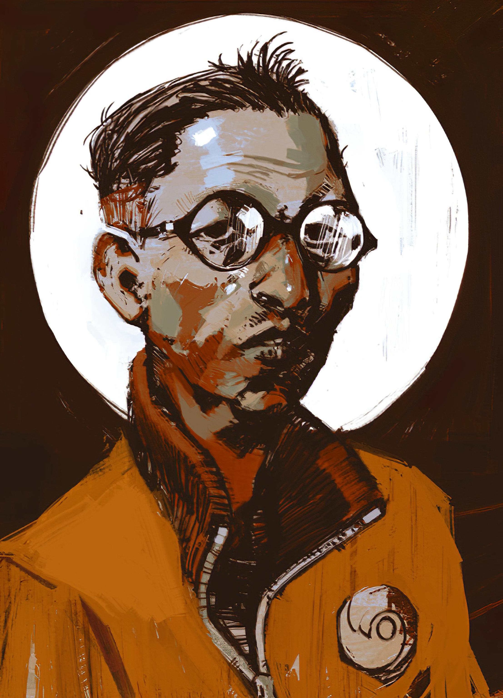
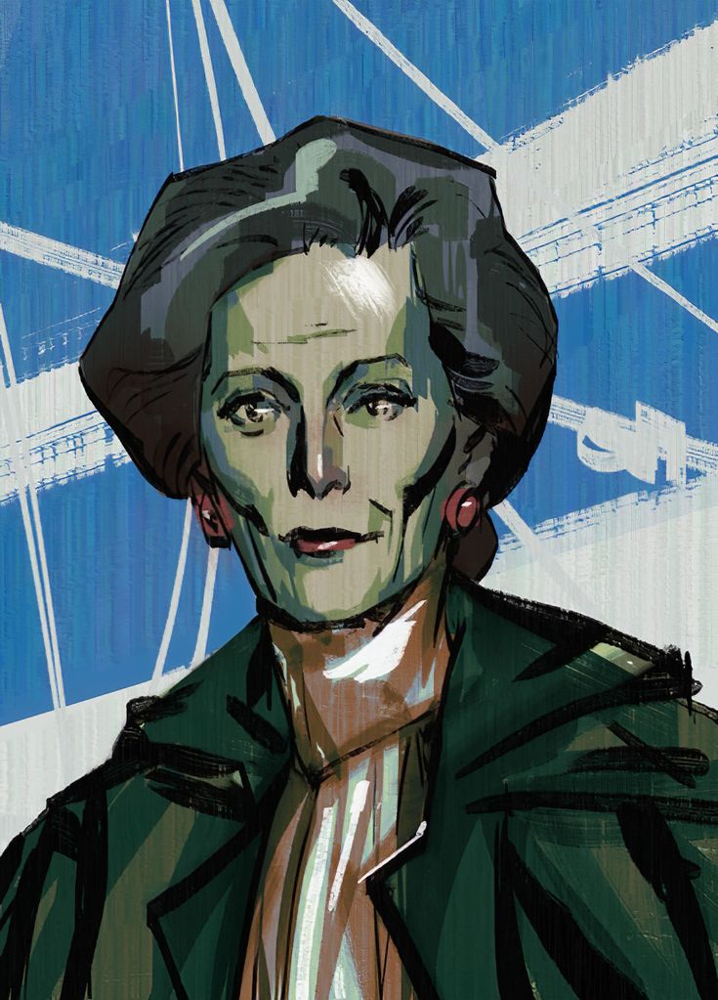
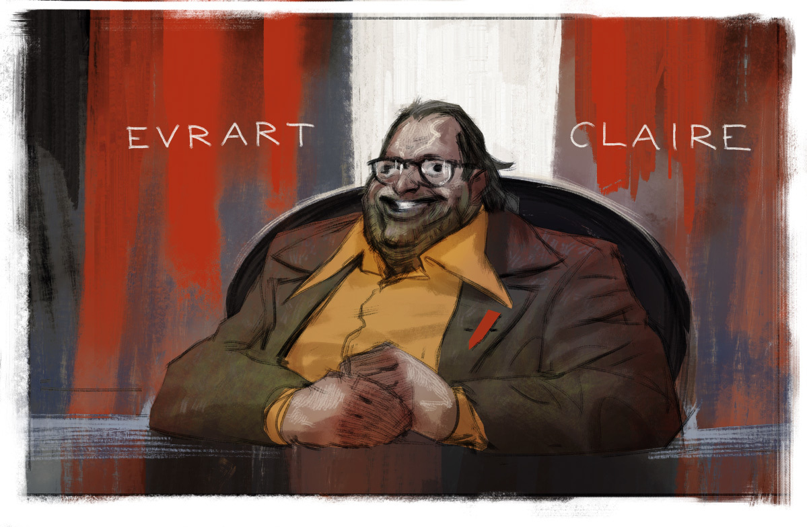
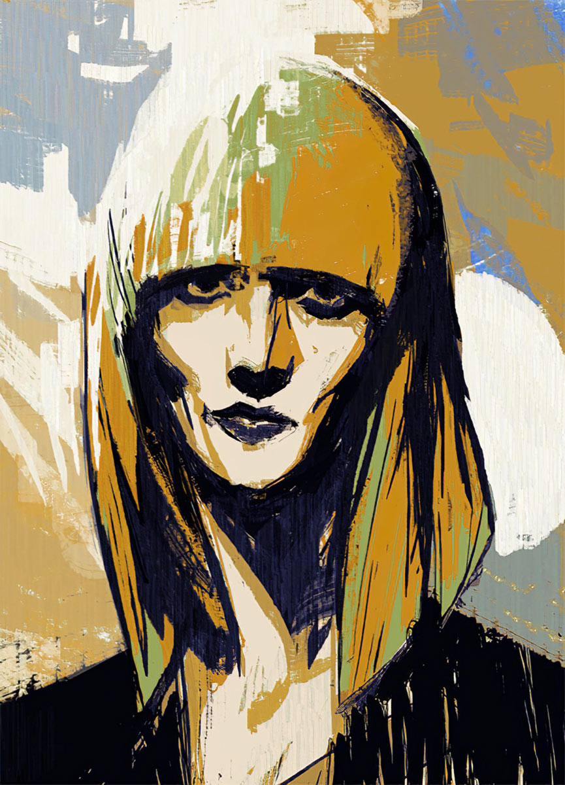
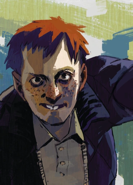

Harrier “Harry” Du Bois

Harry is a detective trying to make sense of a difficult case and his own uncertain past. He is unpredictable, introspective, and shaped by the choices you make.
Created by Erick Merino
Meet some of the people you will encounter in Disco Elysium. These spoiler-light introductions share their roles and personalities without revealing major story events.

Harry is a detective trying to make sense of a difficult case and his own uncertain past. He is unpredictable, introspective, and shaped by the choices you make.

Kim is a practical, observant lieutenant assigned to work alongside Harry. He values careful investigation and approaches unusual situations with steady professionalism.

Joyce is a composed representative for a shipping company. She is thoughtful and well-spoken, and offers a perspective on the tensions surrounding the local harbor.

Evrart leads the local dockworkers' union. He is confident and persuasive, and takes a strong interest in the people and events connected to the harbor.

Klaasje is a guest staying at the Whirling-in-Rags hotel. She is sociable and perceptive, and has her own view of the people and atmosphere around her.

Cuno is a brash, energetic kid from the neighborhood. He speaks his mind and can be hard to impress, but is one of the locals Harry and Kim encounter during their work.